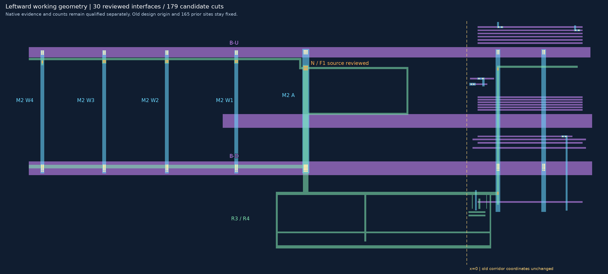
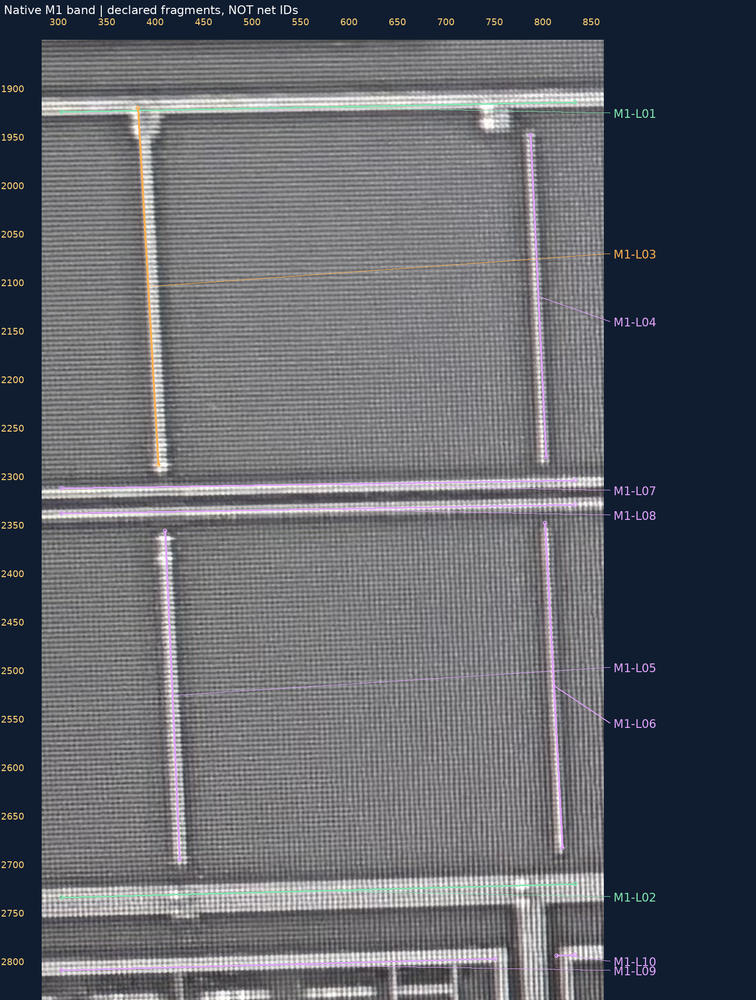
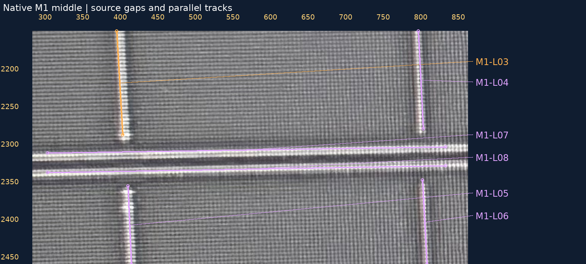

2026-10-30 · 已审接口不重问 · 覆盖缺口明确保留
原话“W3-N、W3-S 均为 V1，接 W3”“W4-N、W4-S 均为 V1，接 W4”已绑定原请求和照片。先补M1上下横条、W3台阶和W4窄承载，再加入完整候选孔组。W4-N按窄承载用2×1候选，其余三组2×2；这些数量/尺寸仍是AI候选，物理孔数未确认。
当前39金属候选、30已审局部接口、179设计候选孔。旧26裁决与165孔边界/中心保持；只有C-M1-SPINE追加4块，旧骨架/宽度/源锚点/原块保持，其余38金属完全相同，视口与原点不变。30组完整候选阵列的包围/间距通过，不是原图精密落点或真实PDK DRC验收。
M1/V1/M2/V2/M3切换及原图 · SVG · PNG大图

| 接口 | 上下承载 | 状态 | 设计候选孔数 |
|---|---|---|---|
| W3-V2-U | WEST-M2-W3-SOURCE → RT-M3-UP | 身份/承载已审；完整设计阵列已检查 | 6（物理孔数未知） |
| W3-V2-D | WEST-M2-W3-SOURCE → RT-M3-DOWN | 身份/承载已审；完整设计阵列已检查 | 10（物理孔数未知） |
| W4-V2-U | WEST-M2-W4-SOURCE → RT-M3-UP | 身份/承载已审；完整设计阵列已检查 | 6（物理孔数未知） |
| W4-V2-D | WEST-M2-W4-SOURCE → RT-M3-DOWN | 身份/承载已审；完整设计阵列已检查 | 10（物理孔数未知） |
| W3-V1-N | C-M1-SPINE → WEST-M2-W3-SOURCE | 身份/承载已审；完整设计阵列已检查 | 4（物理孔数未知） |
| W3-V1-S | C-M1-SPINE → WEST-M2-W3-SOURCE | 身份/承载已审；完整设计阵列已检查 | 4（物理孔数未知） |
| W4-V1-N | C-M1-SPINE → WEST-M2-W4-SOURCE | 身份/承载已审；完整设计阵列已检查 | 2（物理孔数未知） |
| W4-V1-S | C-M1-SPINE → WEST-M2-W4-SOURCE | 身份/承载已审；完整设计阵列已检查 | 4（物理孔数未知） |
本轮没有尚未落实的已提交W3/W4裁决。原照片/旧送审包保持，V1只从M1侧证据接续，未用M2的V2替代。
固定原生范围M1：[300,1870,830,2820]。本轮AI清点10个可见片段：2段主干已建、1段仅建部分、7段未建/归属未知。L编号是来源片段编号，不是新的电气节点或全芯片器件编号。片段数量不是照片穷尽证明，未覆盖全部M2/M3细分支或更高金属。
| 来源片段 | 对象 | 几何状态 | 边界与下一步 |
|---|---|---|---|
| M1-L01 | 上横条 | 本范围主干已建 | 本范围主干已补，来源尺寸未测量。 |
| M1-L02 | 下宽横条 | 本范围主干已建 | 本范围主干已补，物理终点不在本窗口判定。 |
| M1-L03 | W4北侧竖支 | 仅承载片段已建 | 只建上端承载到原生约1970，其下余段未建；不得把整段当已覆盖。 |
| M1-L04 | W3北侧细邻线 | 未建/归属未知 | 不把W3-N孔批准转移给细邻线；上端间隙/归属未确认。 |
| M1-L05 | W4南侧细竖线 | 未建/归属未知 | 与上下横条的局部间隙和全局归属保留未知。 |
| M1-L06 | W3南侧细竖线 | 未建/归属未知 | 不根据接近下宽横条而合并，精确端部需补查。 |
| M1-L07 | 中部上细横条 | 未建/归属未知 | 不得直接指派给旧L1/L2，原生同线身份尚未绑定。 |
| M1-L08 | 中部下细横条 | 未建/归属未知 | 与上细横条保持分开，向两侧出界不等于物理终点。 |
| M1-L09 | 底部平行条左段 | 未建/归属未知 | 右端邻近竖段留有中断；不跨空白补桥。 |
| M1-L10 | 底部平行条右段 | 未建/归属未知 | 只记录窗口内右片段；不因同高合并左段。 |
下一步先补L03余段及7个未建片段，逐项核来源→几何→接口；不继续以增加零散小样代替覆盖验收。已有连接不重审，只有补图中产生新的身份/连接歧义才请求人工裁决。L09/L10不跨空白合并，中段细横条不凭相似度指派给旧L1/L2。
绿色＝本范围主干已建；橙色＝部分；紫色＝未建/归属未知。标记为近似来源走向，不是精密边界或层间投影。原生范围[280, 1850, 860, 2840]，整数放大2倍。
无标记原图 · 标记大图
绿色＝本范围主干已建；橙色＝部分；紫色＝未建/归属未知。标记为近似来源走向，不是精密边界或层间投影。原生范围[280, 2150, 860, 2460]，整数放大2倍。
无标记原图 · 标记大图
四V1原话 · 恢复请求 · 来源/几何/接口清单 · CSV · 缺口接续计划 · 验证
本轮38项相关测试通过；固定工程回归另有31项测试通过及历史样本精确回放，未测新AI准确率。浏览器交互未实测；source_to_design_transform=null，geometry_adopted=false，net_edges=[]，complete_network=false。README/site/gh-pages保持，无提交/推送。